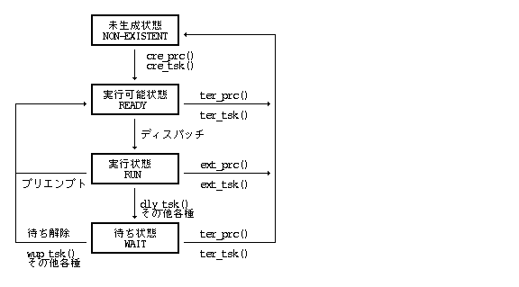
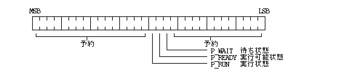
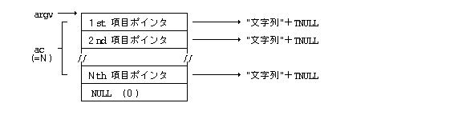

Підсистема управління процесами та задачами надає всі необхідні функції для реалізації однокористувацької багатозадачної/багатопроцесної операційної системи.
Процес (Process) — це базова одиниця управління програмою з боку ОС. В системі може одночасно існувати кілька процесів.
Задача / потік (Task) — це одиниця виконання коду. Кожен процес містить одну або кілька задач, які виконуються паралельно за допомогою планувальника на основі пріоритетів та квантування часу (Time-Sharing).
Кожен процес має власне ізольоване віртуальне адресне середовище (Address Space), як показано на схематичному малюнку нижче.
Процес створюється шляхом вказівки виконуваного файла програми та ідентифікується унікальним числовим ідентифікатором процесу (PID). PID — це додатне ціле число, яке призначається послідовно в порядку зростання.
При створенні процесу автоматично запускається його головна задача (Main Task). Головна задача може породжувати додаткові підзадачі (Subtasks), завдяки чому процес може мати 1 головну задачу та 0 або більше підзадач.
Головні задачі та підзадачі узагальнено називаються задачами (Tasks). Кожна задача ідентифікується додатним ідентифікатором задачі (Task ID / TID).
При завантаженні системи спочатку створюється системний початковий процес (Init Process), який послідовно породжує всі інші необхідні процеси. Процес, створений даним процесом, називається дочірнім процесом (Child Process), а процес, що його створив — батьківським процесом (Parent Process). Системний початковий процес не має батьківського процесу. Таким чином, уся сукупність процесів у системі утворює деревоподібну ієрархічну структуру з початковим процесом у корені.
Якщо процес завершує роботу, його дочірні процеси автоматично всиновлюються батьківським процесом завершеного процесу, завдяки чому зберігається цілісність дерева процесів. Винятком є випадок завершення початкового процесу, після якого його дочірні процеси залишаються без батьківського процесу.
Визначено 4 основні стани процесу (стан процесу відповідає стану його головної задачі):
| Неіснуючий стан | (Non-Existent) | -- Процес ще не створено або вже знищено |
| Готовий до виконання | (Ready) | -- Процес готовий до роботи та очікує виділення процесорного часу (Dispatch) |
| Стан виконання | (Run) | -- Процес виконується на процесорі в даний момент |
| Стан очікування | (Wait) | -- Процес заблоковано в очікуванні події, повідомлення, таймера або вводу-виводу |
Перехід між станами здійснюється через системні виклики та діями планувальника (Dispatching / Preemption), як показано на діаграмі:

Поточний стан процесу зчитується у вигляді структури P_STATE:
typedef struct {
UW state; /* Стан процесу (Process State) */
W priority; /* Поточний пріоритет процесу (0..255) */
W parpid; /* PID батьківського процесу */
} P_STATE;
Слово стану процесу (Process State Word / state) містить набір прапорців, де значення «1» вказує на активність відповідного стану.

Підзадачі мають аналогічні стани та переходять за тими ж правилами.
При завершенні процесу всі його задачі автоматично припиняють виконання. Також завершення головної задачі призводить до примусового припинення всіх підзадач та завершення процесу. Завершення окремої підзадачі не призводить до завершення всього процесу.
При створенні процесу йому призначається пріоритет у діапазоні 0 – 255 (де 0 — найвищий пріоритет). Цей пріоритет встановлюється для його головної задачі. Поняття «пріоритет процесу» є еквівалентним пріоритету його головної задачі.
Усі процеси та задачі розподіляються за пріоритетом на 3 класи планування:
Планування здійснюється суворо за пріоритетом (0 — найвищий пріоритет). Задачі з однаковим пріоритетом плануються циклічно за алгоритмом Round-Robin.
У цій групі застосовується загальне циклічне планування, де значення пріоритету визначає відносну частоту виділення процесорного часу (128 — найвищий пріоритет у групі). Це гарантує відсутність голодування для задач з низьким пріоритетом.
Аналогічно до групи 1, здійснюється циклічне планування для фонових задач (192 — найвищий пріоритет у даній групі).
Порядок роботи глобального планувальника задач:
1. Якщо в абсолютній групі є готові задачі (Ready), планувальник обирає задачу з найвищим пріоритетом і запускає її (Run). Якщо ні — переходить до п. 2.
2. Якщо в групі Round-Robin 1 є готові задачі (Ready), згідно з їхнім відносним пріоритетом обирається задача, переводиться в стан виконання (Run) і запускається. Якщо готових задач немає — переходить до п. 3.
3. Якщо в групі Round-Robin 2 є готові задачі (Ready), обирається задача відповідно до її відносного пріоритету, переводиться в стан виконання (Run) і запускається. Якщо готових задач немає — цикл планування відновлюється з самого початку.
Зазвичай група абсолютного пріоритету використовується для системних ядерних та системних систем реального часу (Real-Time System Processes), а стандартні прикладні програми використовують групи Round-Robin 1 або 2.
Зміна пріоритету вже створеного процесу або задачі дозволена лише у межах її початкової групи (зміна групи планування заборонена).
Для кожного процесу система зберігає наступне середовище виконання (Execution Environment):
При створенні нового дочірнього процесу викликом cre_prc() його початкове середовище ініціалізується наступним чином:
| Елемент середовища | Значення для нового дочірнього процесу |
|---|---|
| PID власного / батьківського процесу | Призначений унікальний PID / PID батьківського процесу |
| Пріоритет процесу | Значення, вказане при створенні cre_prc() |
| Дані користувача | Успадковуються від батьківського процесу |
| Поточний робочий файл | Успадковується від батьківського процесу |
| Відкриті файли | Відсутні (порожній список) |
| Черга повідомлень | Порожня черга |
Системні дані користувача містять інформацію про власника та права доступу процесу:
typedef struct {
TC usr_name[14]; /* Ім'я користувача (12 символів + 2 приховані) */
TC grp_name1[14]; /* Назва групи 1 (12 символів + 2 приховані) */
TC grp_name2[14]; /* Назва групи 2 (12 символів + 2 приховані) */
TC grp_name3[14]; /* Назва групи 3 (12 символів + 2 приховані) */
TC grp_name4[14]; /* Назва групи 4 (12 символів + 2 приховані) */
W level; /* Рівень привілеїв користувача (0..15) */
W net_level; /* Мережевий рівень привілеїв (1..15) */
} P_USER;
Початковий процес містить замовчані системні дані користувача. При аутентифікації користувача ці дані оновлюються на актуальну інформацію з профілю облікового запису.
Створення процесу виконується шляхом вказівки цільового виконуваного файла, пріоритету процесу та початкового повідомлення запуску.
Перший виконуваний запис у вказаному Реальному об'єкті стає програмним кодом нового процесу. Цей запис повинен бути першим у файлі.
Початкове повідомлення описується вказівником на структуру MESSAGE:
typedef struct {
W msg_type; /* Тип повідомлення */
W msg_size; /* Розмір повідомлення у байтах */
UB msg_body[n]; /* Тіло повідомлення (msg_size байт) */
} MESSAGE;
Створений процес може приймати початкове повідомлення в одному з 2 форматів. Повернення з функцій MAIN() чи main() є еквівалентним виклику ext_prc(), а повернутий код передається батьківському процесу:
W MAIN (MESSAGE *msg)
{
/* msg — вказівник на початкове системне повідомлення */
< Код виконання програми >
return код_завершення;
}
W main (W ac, TC **argv)
{
/* ac — кількість аргументів командного рядка */
/* argv — масив вказівників на аргументи-рядки TRON Code */
< Код виконання програми >
return код_завершення;
}

Задачі процесу виконуються паралельно. Окрім основного потоку, ядро може асинхронно викликати наступні системні обробники (функції-інтеррапти):
Асинхронні функції, що активуються при надходженні системних повідомлень (див. «1.2.3 Обробники повідомлень»).
Асинхронні функції, що викликаються при системних збоях або винятках процесу (див. «1.10 Загальне системне управління»).
Поточний стан використання ресурсів процесу зчитується структурою P_INFO:
typedef struct {
UW etime; /* Сумарний час існування процесу (секунди) */
UW utime; /* Сумарний CPU-час коду користувача (мілісекунди) */
UW stime; /* Сумарний CPU-час коду ядра (мілісекунди) */
W tmem; /* Загальний необхідний розмір пам'яті (байти) */
W wmem; /* Виділена фізична пам'ять (байти) */
W resv[11]; /* Зарезервовано */
} P_INFO;
typedef struct {
UW state; /* Стан процесу */
W priority; /* Поточний пріоритет (0..255) */
W parpid; /* PID батьківського процесу */
} P_STATE;
typedef struct {
TC usr_name[14]; /* Ім'я користувача (12 символів + 2 приховані) */
TC grp_name1[14]; /* Група 1 */
TC grp_name2[14]; /* Група 2 */
TC grp_name3[14]; /* Група 3 */
TC grp_name4[14]; /* Група 4 */
W level; /* Рівень привілеїв (0..15) */
W net_level; /* Мережевий рівень (1..15) */
} P_USER;
typedef struct {
UW etime; /* Сумарний час (секунди) */
UW utime; /* CPU-час користувача (мс) */
UW stime; /* CPU-час ядра (мс) */
W tmem; /* Загальна пам'ять (байти) */
W wmem; /* Фізична пам'ять (байти) */
W resv[11]; /* Зарезервовано */
} P_INFO;
#define TERM_NRM 0x0000 /* Завершення лише вказаного процесу */ #define TERM_ALL 0x0001 /* Примусове завершення дочірнього дерева */ #define P_ABS 0x0000 /* Абсолютний пріоритет */ #define P_REL 0x0001 /* Відносний пріоритет */ #define P_TASK 0x0002 /* Прапорець цільової задачі */ #define P_WAIT 0x2000 /* Стан очікування */ #define P_READY 0x4000 /* Стан готовності */ #define P_RUN 0x8000 /* Стан виконання */
|
WERR cre_prc(LINK* lnk, W pri, MESSAGE* msg)
LINK* lnk Вказівник на посилання/дескриптор цільового Реального об'єкта (виконуваного файла)
W pri Пріоритет створюваного процесу
0 <= pri <= 255 Довільний пріоритет
= -1 Успадкувати пріоритет батьківського процесу
MESSAGE* msg Початкове системне повідомлення запуску процесу
> 0 Успішне виконання (PID згенерованого дочірнього процесу) < 0 Помилка (Код помилки)
Завантажує виконуваний запис програми з вказаного Реального об'єкта (lnk) та створює новий дочірній процес у системі. Одночасно автоматично ініціалізується та запускається його головна задача (Main Task).
Детальний опис процедур ініціалізації див. у розділі «1.1.6 Створення та запуск процесів».
ER_ACCES : Відсутні необхідні права доступу (R/W/E) до вказаного об'єкта. ER_ADR : Неприпустима адреса вказівника у віртуальній пам'яті. ER_BUSY : Ресурс або файл заблокований у монопольному режимі іншим процесом. ER_IO : Критична помилка введення/виведення (I/O Error) пристрою. ER_NOEXS : Вказаний об'єкт, файл або ім'я відсутнє у системі. ER_NOFS : Файлова система або том зазначеного об'єкта не підключена (Unmounted). ER_NOMEM : Помилка виконання системного виклику. ER_NOSPC : Недостатньо оперативної пам'яті ядра для виконання операції. ER_PPRI : Помилка виконання системного виклику. ER_REC : Помилка виконання системного виклику. ER_SZOVR : Розмір файлу або об'єкта перевищує максимально припустимий системний ліміт.
|
VOID ext_prc(W code)
W code Код завершення процесу (Exit Code)
Функція не повертає управління (процес знищується).
Нормально завершує виконання власного процесу і надсилає батьківському процесу системне повідомлення про нормальне завершення із кодом code.
Усі системні ресурси (дескриптори відкритих файлів, семафори з атрибутом DELEXIT) автоматично вивільняються ядром.
Помилок немає (завжди виконується успішно).
|
ERR ter_prc(W pid, W code, W opt)
W pid Ідентифікатор цільового процесу (PID)
> 0 Довільний процес
= 0 Власний процес (заборонено: вертає ER_SELF)
= -1 Батьківський процес
W code Код примувого завершення
W opt Атрибути примусового завершення (TERM_NRM || TERM_ALL)
TERM_NRM Примусове завершення лише вказаного процесу.
TERM_ALL Примусове завершення вказаного процесу та всіх його дочірніх нащадків.
= 0 Успішне виконання < 0 Помилка (Код помилки)
Примусово перериває та знищує вказаний процес (pid) і надсилає його батьківському процесу повідомлення про примусове завершення. Процес не може примусово завершити інший процес із вищим рівнем привілеїв.
ER_SELF : Помилка виконання системного виклику. ER_NOPRC : Помилка виконання системного виклику. ER_LEVEL : Помилка виконання системного виклику. ER_PAR : Неприпустиме значення одного з параметрів системного виклику.
|
WERR chg_pri(W id, W pri, W opt)
W id Ідентифікатор процесу (PID) або задачі (TID)
W pri Новий рівень пріоритету
W opt Режим зміни пріоритету (P_ABS || P_REL) | [ P_TASK ]
P_ABS Абсолютна зміна: пріоритет стає рівним pri.
P_REL Відносна зміна: новий пріоритет = (поточний пріоритет) + pri.
P_TASK Об'єктом зміни є конкретна задача TID.
>= 0 Успішне виконання (новий підтверджений пріоритет 0..255) < 0 Помилка (Код помилки)
Змінює пріоритет вказаного процесу або конкретної задачі. Зміна пріоритету дозволена лише у межах поточного класу планування (групи пріоритету).
ER_ID : Неприпустимий ідентифікатор ID об'єкта або процесу. ER_PPRI : Помилка виконання системного виклику.
|
WERR cre_tsk(FP entry, W pri, W arg)
FP entry Адреса точки входу функції підзадачі W pri Пріоритет підзадачі W arg Початковий параметр, що передається підзадачі
> 0 Успішне виконання (TID створеної підзадачі) < 0 Помилка (Код помилки)
Створює та запускає нову підзадачу (Subtask) в адресному просторі власного процесу. Сигнатура функції підзадачі повинна відповідати виклику: VOID subtask(W arg) та обов'язково завершуватися викликом ext_tsk().
ER_ADR : Неприпустима адреса вказівника у віртуальній пам'яті. ER_PPRI : Помилка виконання системного виклику. ER_LIMIT : Перевищено системний ліміт кількості відкритих об'єктів або файлів. ER_NOMEM : Помилка виконання системного виклику.
|
VOID ext_tsk(VOID)
Відсутні (VOID)
Функція не повертає управління (задача знищується).
Завершує виконання поточної задачі. Якщо виклик виконується головною задачею (Main Task), це призводить до завершення всього процесу.
Помилок немає.
|
ERR ter_tsk(W tskid)
W tskid Ідентифікатор цільової підзадачі (TID)
= 0 Успішне виконання < 0 Помилка (Код помилки)
Примусово завершує виконання вказаної підзадачі в рамках власного процесу. Заборонено примусово завершувати головну задачу або поточну задачу.
ER_ID : Неприпустимий ідентифікатор ID об'єкта або процесу.
|
ERR slp_tsk(W time)
W time Максимальний інтервал таймауту у мілісекундах
> 0 Очікувати вказану кількість мілісекунд
= -1 Безкінечне очікування (до виклику wup_tsk)
= 0 Успішне виконання (задача розблокована викликом wup_tsk) < 0 Помилка (Код помилки)
Переводить поточну задачу у стан очікування (Wait). Очікування припиняється при спливанні таймеру time або при отриманні сигналу пробудження wup_tsk() від іншої задачі.
ER_NONE : Помилка виконання системного виклику. ER_MINTR : Обробку перервано внаслідок надходження системного сигналу. ER_PAR : Неприпустиме значення одного з параметрів системного виклику.
|
ERR wup_tsk(W tskid)
W tskid Ідентифікатор цільової задачі (TID)
= 0 Успішне виконання < 0 Помилка (Код помилки)
Пробуджує вказану задачу tskid зі стану очікування slp_tsk(). Якщо задача не перебувала в стані очікування, запит пробудження заноситься у чергу. Виклик дозволений лише для задач власного процесу.
ER_ID : Неприпустимий ідентифікатор ID об'єкта або процесу. ER_LIMIT : Перевищено системний ліміт кількості відкритих об'єктів або файлів.
|
WERR can_wup(W tskid)
W tskid Ідентифікатор цільової задачі
> 0 Довільна задача власного процесу
= 0 Власна задача
>= 0 Успішне виконання (кількість скасованих запитів у черзі) < 0 Помилка (Код помилки)
Очищає та скасовує всі накопичені чергові запити пробудження (Wakeup Requests) для вказаної задачі tskid у межах власного процесу.
ER_ID : Неприпустимий ідентифікатор ID об'єкта або процесу.
|
ERR dly_tsk(W time)
W time Час затримки у мілісекундах (time >= 0)
= 0 Успішне виконання < 0 Помилка (Код помилки)
Призупиняє виконання поточної задачі на вказаний інтервал time (у мілісекундах).
Якщо вказано time = 0, задача добровольно віддає залишок процесорного часу, переходячи зі стану виконання (Run) у стан готовності (Ready) для виконання процедури перепланування процесора (Yield).
ER_MINTR : Обробку перервано внаслідок надходження системного сигналу. ER_PAR : Неприпустиме значення одного з параметрів системного виклику.
|
W get_tid(VOID)
Відсутні (VOID)
> 0 Успішне виконання (TID власної задачі)
Повертає системний ідентифікатор поточної задачі (TID).
Помилок немає (завжди повертає дійсний TID).